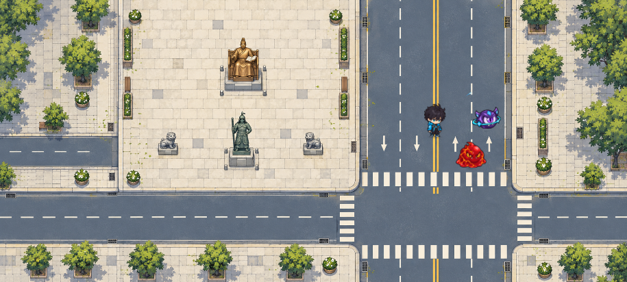
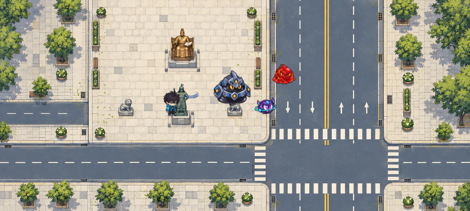
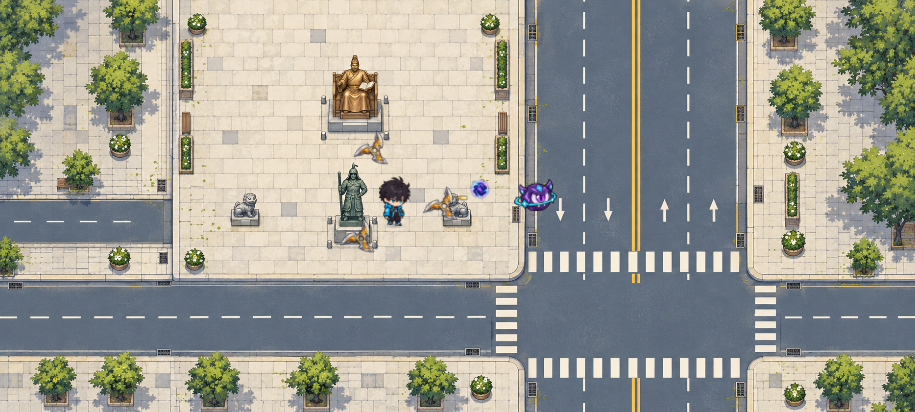
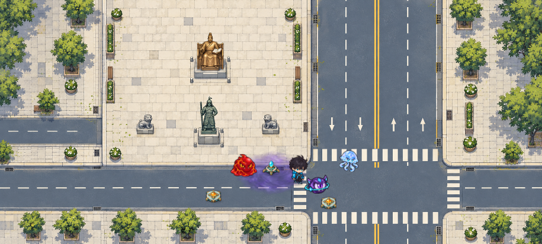

검흔부터 로비까지, 실제 적용한 움직임
검기 세 겹, 연속 투사체 궤적, 적 접점을 따라가는 번개, 설치물과 메뉴의 짧은 반응을 게임에 연결했습니다.
01 · 마력검
주 검흔과 두 보조 검흔이 시간차로 이어지고, 흰 중심과 청록 외곽이 사라집니다. 8방향과 Lv.1 실제 쿨타임 간격을 표시합니다.

이전 적용과 비교

02 · 연쇄번개
적의 접점을 따라 이어지는 번개와 도착 방전입니다. 실제 연결 길이를 유지하고 움직이는 대상을 따라갑니다.

이전 적용과 비교

03 · 마력탄·관통탄·산탄·포탑·적 탄
종류별 원화와 색, 이동을 보간하는 최대 8지점 리본입니다. 적 탄은 독립 표시 ID로 잔상을 유지합니다.

이전 적용과 비교

04 · 수호 표창
현재 머리 위 궤도를 유지하면서 회전 잔광을 연결했습니다.

05 · 마력 폭격
포물선 발사 뒤 착탄빛·충격파·연기가 시간차로 이어집니다.

06 · 마력장·지뢰·포탑
설치 등장과 장치 발동빛, 낮은 지뢰 폭발을 구분합니다. 마력장은 캐릭터와 적 뒤에서 천천히 흐릅니다.

이전 적용과 비교

07 · 적 행동과 보스
실제 방향을 쓰는 돌진 예고, 원형 위험 영역, 지원 시전과 보스 발동입니다.

08 · 마력석과 지갑
획득 접점의 작은 금빛과 지갑 회수 반응입니다. 실제 게임의 HUD 비행 목적지는 유지합니다.

09 · 무기 6개·몬스터 19종
고정된 혼합 장면에서 주 공격·위험 예고·적 탄·HUD의 가독성을 비교합니다. 실제 전투 시뮬레이션은 실행하지 않습니다.

10 · 로비
기존 환경 레이어와 작전 단말의 순차 점등·스캔 흐름입니다. 승인된 화면 구성과 그림은 그대로입니다.

11 · 각성자 선택
배경 위치를 고정하고 선택 가장자리와 상세 원화에만 짧은 반응을 표시합니다.

12 · 게이트24
실제 상품 원화 영역의 획득빛과 잠금 테두리 반응입니다. 구매·리롤·잠금 규칙은 유지합니다.

13 · 성장
성공한 성장의 원화에 짧은 광편을 연결했습니다.

14 · 보급
기존 상자와 보상 원화에 사용하는 후광·광편입니다. 런타임의 실제 개봉 Tween과 함께 연결됩니다.

15 · 결과
성공 결과의 실제 보상 원화 주변에 금빛을 표시합니다. 실패 결과는 차분한 전환을 사용합니다.